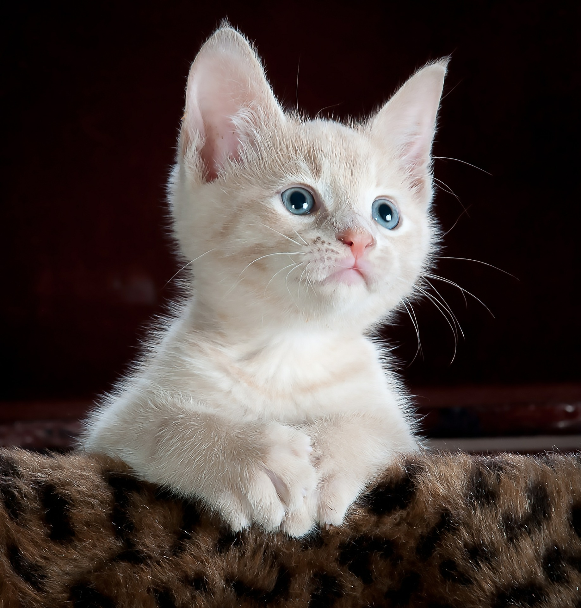

TRIBUTE TO CAT
Home
Eassy
Gallery

I'm a Cat
Owning any pet is good for your heart. Cats in particular lower your stress level—possibly since they don't require as much effort as dogs—and lower the amount of anxiety in your life. Petting a cat has a positive calming effect